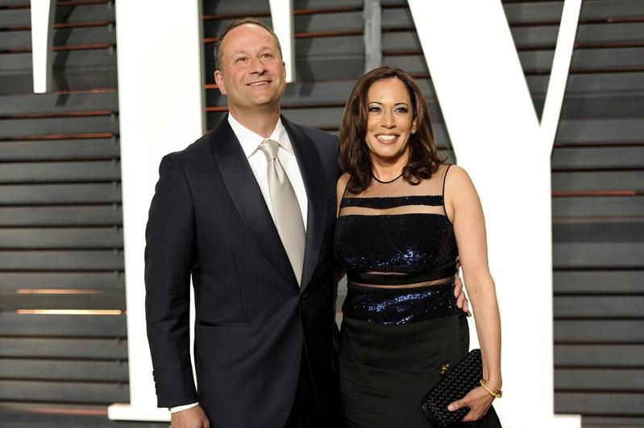

副总统贺锦丽确定代表民主党出战白宫，家庭成员的过往也被一一放大查看。近来有媒体爆料，贺锦丽丈夫任德龙（Douglas Emhoff）第一段婚姻曾出轨，还让小孩的保母怀孕。
每日邮报3日率先报导，现年59岁的任德龙1992年和第一任妻子克斯汀（Kerstin）结婚，后来却出轨47岁的女儿保母内勒（Najen Naylor），而内勒同时也是女儿的私立小学老师。造成婚姻破裂后，任德龙与妻子于2009年离婚。内勒受访时未否认该事件。
报导指出，内勒当年甚至怀了任德龙的孩子，只是最终没有选择生下来。
CNN报导，任德龙坦承，「在我的第一段婚姻中，由于我的行为，克丝汀与我经历了一段艰难时期，对此我承担责任。」
克斯汀在得知任德龙的过往被揭开后，透露她和任德龙当初是因为各种原因而分开，称任德龙是个很好的父亲，两人自离婚后也一直都是好友。
任德龙2014年与贺锦丽结婚，两人共同抚养任德龙与克斯汀的小孩。据了解，贺锦丽在结婚前就知道任德龙第一段婚姻曾有过婚外情，拜登竞选团队2020年在选择副总统人选时，也了解到任德龙的这段过去。对此，贺锦丽竞选团队发言人拒绝置评。